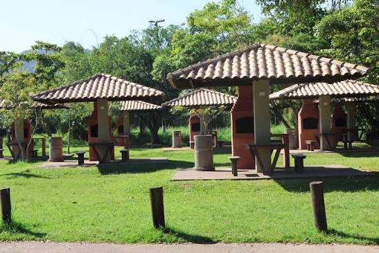
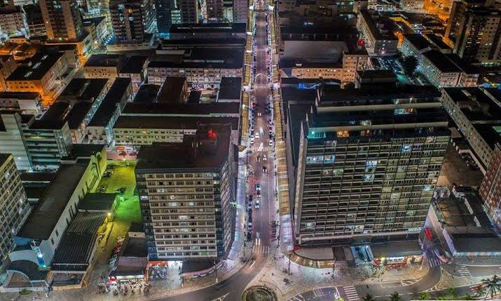

HISTORIA
Habitada por pescadores desde o século XIX, Praia Grande constituía-se de vários núcleos espalhados ao longo da faixa litorânea. Em 1902, iniciou-se na região a construção do Forte de Itaipu.
O acesso a suas terras, a partir de São Vicente, tornou-se mais fácil com a inauguração, em 1914, da Ponte Pênsil, que passava a ligar o Morro dos Barbosas, na ilha, ao Morro Japuí, no continente, vencendo a parte estreita do Mar Pequeno.

A ponte foi construída para conduzir um emissário de esgoto, parte do plano de saneamento de Santos, elaborado pelo engenheiro Francisco Saturnino de Brito.
A Casa August Klonne, da Alemanha, encarregou-se de seu projeto. Outro importante fator de desenvolvimento para a região foi a construção do ramal Santos–Juquiá da Estrada de Ferro Sorocabana.
Mas sua ocupação só veio a se tornar mais efetiva, na década de 50, com a construção da rodovia Padre Manoel da Nóbrega e da abertura do Bairro Cidade Ocian.
A primeira medida administrativa ocorreu em 18 de fevereiro de 1959, com a criação do 2º subdistrito (Boqueirão) do distrito-sede do município de São Vicente.
A autonomia municipal foi adquirida em 28 de fevereiro de 1964, quando além do próprio município de Praia Grande, foi criado um distrito com o mesmo nome, com sede no 2º subdistrito (Boqueirão) e território desmembrado de São Vicente.
Fonte: Fundação SEADE – 2006
DICAS TURISTICAS
Portinho - Parque Ézio Dall' Acqua (Sítio do Campo): Ótimo espaço ao ar livre com quiosques com churrasqueiras, playground, quadras esportivas e píer para pesca ou passeio de barco.

A Avenida Presidente Costa e Silva é o principal centro comercial a céu aberto de Praia Grande, localizada no coração do dinâmico bairro do Boqueirão. Conhecida popularmente apenas como "Costa e Silva", ela serve como o verdadeiro coração pulsante da cidade para compras, serviços e entretenimento, conectando diretamente o fluxo urbano até a orla da praia.
